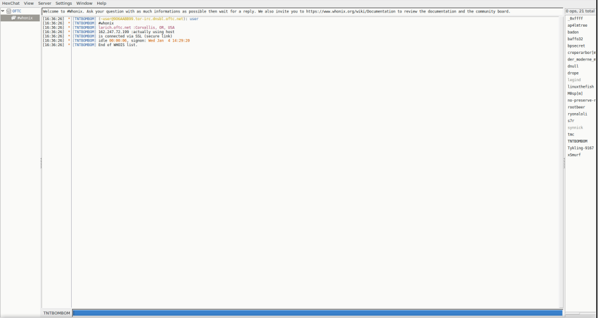

We believe security software like Whonix needs to remain Open Source and independent. Would you help sustain and grow the project? Learn more about our 11 year success story and maybe DONATE!

Anonymous IRC Chat. HexChat (previously called XChat) over the Tor Anonymity Network.
Introduction
 HexChat is no longer maintained. It may contain serious bugs or security
vulnerabilities that render it unsafe to use. See the final release
announcement. Whonix no longer includes HexChat by default.
HexChat is no longer maintained. It may contain serious bugs or security
vulnerabilities that render it unsafe to use. See the final release
announcement. Whonix no longer includes HexChat by default.
HexChat is an open source IRC client based on XChat. It includes basic functionality found in IRC clients, like secure connections, multiple server connections, nick completion, a client-to-client protocol, direct client-to-client file transfer and chat, and a plugin system which allows extension of features and further customization. [1] [2]
HexChat in Whonix has been hardened according to The Tor Project's Torrifying HexChat guide. [3] All servers, besides the secure (SSL) version of the Open and Free Technology Community (OFTC) have been removed. [4] It is recommended to add the securely encrypted version of the IRC server, preferably an onion service which uses SSL as a fallback or at best, both. Also see: Torifying HexChat.
Note that the official #Tor channel is on OFTC, but no Whonix developers are active there! Upstream Tor developers do not support Whonix. For help with Whonix-related issues, see Support.
Deprecated
- https://hexchat.github.io/news/2.16.2.html
- https://forums.whonix.org/t/remove-hexchat-unmaintained/18391/2
HexChat Operations
Start HexChat
If you are using Qubes-Whonix™, complete the following steps.
Qubes App Launcher (blue/grey "Q") →
Whonix-Workstation™ AppVM (commonly named anon-whonix)
→ HexChat IRC
If you are using a graphical Whonix-Workstation, complete the following steps.
Start menu → Applications →
Internet → HexChat IRC
Reset the HexChat Identity
 Warning: This will kill HexChat, delete all settings,
scripts and logs and finally create a fresh HexChat identity.
Warning: This will kill HexChat, delete all settings,
scripts and logs and finally create a fresh HexChat identity.
Run.
hexchat-reset
Done.
SASL
Some networks and hidden IRC servers (like freenode) require Simple Authentication and Security Layer (SASL) to connect to them.
Setting up SASL is outside the scope of this entry; refer to The Tor Project SASL Authentication instructions.
Privacy Check
Before joining any channels, run the whois function from the status window.
/whois your-user-name your-user-name
The following example Chat (IRC client) screenshot shows the /whois output for user nurmagoz (/whois nurmagoz nurmagoz).
Figure: IRC /whois Output

Disabling Hardening and File Transfers
Refer to this forum thread: Hexchat downloads?
IRC General
The Ident Protocol [5] is automatically blocked because Whonix-Workstation is firewalled. [6]
The Tor Project Internet Relay Chat page contains general IRC safety techniques and other tips. Another useful resource is the IRC Security page. Key information and advice is provided on:
- The importance of (additional) encrypted connections:
- If an onion service is available, then use it. It is also safer to combine additional layers of encryption like SSL, TLS or GPG if possible.
- If an IRC server uses a self-signed certificate, then explicitly check the SSL/TLS certificate is correct to prevent man-in-the-middle attacks.
- Avoiding Trojan Horse attacks via malicious, downloaded files.
- Defense against Denial of Service attacks. [7]
- Dangers associated with downloaded files.
- Firewall considerations.
- The impact of potential back-doors in IRC clients.
- Circumvention of Tor censorship.
- End-to-end encryption using OTR and other plugins.
- Social safety measures to prevent de-anonymization.
- Other miscellaneous security advice.
Connection Issues
If a message similar to the following appears.
* Closing Link: 93.115.95.205 (No more connections permitted from your host)
* Disconnected (Remote host closed socket)This most likely means the connection to the IRC server is working, but the server disconnects because they are not accepting Tor network connections. This is a general Tor censorship problem and unrelated to Whonix; see List Of Services Blocking Tor.
Unfortunately there is no easy solution and each available workaround has pros and cons:
- Use an IRC alternative if this is feasible; see Chat for options.
- If possible, use another Tor-friendly IRC network: List of IRC/chat networks that block or support Tor. [8]
- Check if the IRC network provides a solution for Tor users. For example, OFTC and Tor.
- Combine Tor with an additional tunnel link to circumvent blocks.
[9] A connection to Tor must be made before the
tunnel-link (proxy / VPN / SSH):
User→Tor→proxy / VPN / SSH→Internet. - Use an IRC bouncer; see Internet Relay Chat. In the past, there were no trustworthy and free IRC bouncer services, but this situation may have changed in 2018. IRC bouncers are very affordable, but it is difficult to register and pay anonymously, see: Money.
To follow the associated Whonix development ticket, see: Migrating from IRC OFTC to Tor friendly IRC network.
Screenshots
Figure: HexChat IRC Client Chat Window

See Also
Footnotes
- https://en.wikipedia.org/wiki/HexChat
- https://hexchat.github.io/
- https://gitlab.torproject.org/legacy/trac/-/wikis/doc/TorifyHOWTO/HexChat
- This is an IRC network which provides collaboration services for members of the free software community, anywhere in the world.
- https://en.wikipedia.org/wiki/Ident_protocol
- The Tor Project notes:
In both UNIX and Windows systems, the logged in username becomes the default ident. The ident is seen by most clients during channel join and when performing the /whois command. It is therefore recommended to fake your ident before you connect to any IRC servers.
- Which otherwise can make networked computers disconnect or crash.
- Or conduct an Internet search for "Tor-friendly IRC server".
- This is a time-consuming and steep learning curve just to solve this issue.
Categories: Documentation